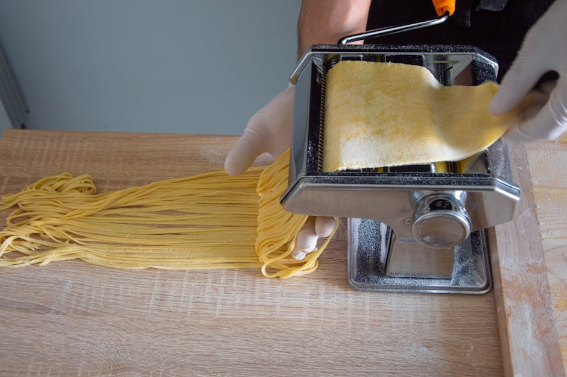

Cosa Offriamo
La nostra selezione rigorosa per garantirti solo le migliori esperienze gastronomiche.

Recensioni Ristoranti
Analizziamo e valutiamo con rigore ogni locale. Affidati alle nostre approfondite recensioni ristoranti per scegliere sempre la tavola perfetta, dalla cena romantica all'incontro di lavoro, garantendo qualità e servizio impeccabile.

Trattorie e Osterie
Un viaggio alla riscoperta della vera cucina tradizionale. Selezioniamo le migliori trattorie e osterie locali, luoghi custodi di ricette storiche dove l'autenticità degli ingredienti incontra il calore dell'ospitalità casalinga.

Eccellenze del Territorio
Non solo cibo, ma un'esperienza completa. Oltre ai ristoranti consigliati, esploriamo le cantine e le produzioni artigianali d'eccellenza. Ti aiutiamo a scoprire i migliori abbinamenti enologici per esaltare ogni piatto della nostra tradizione.
Richiedi maggiori informazioni